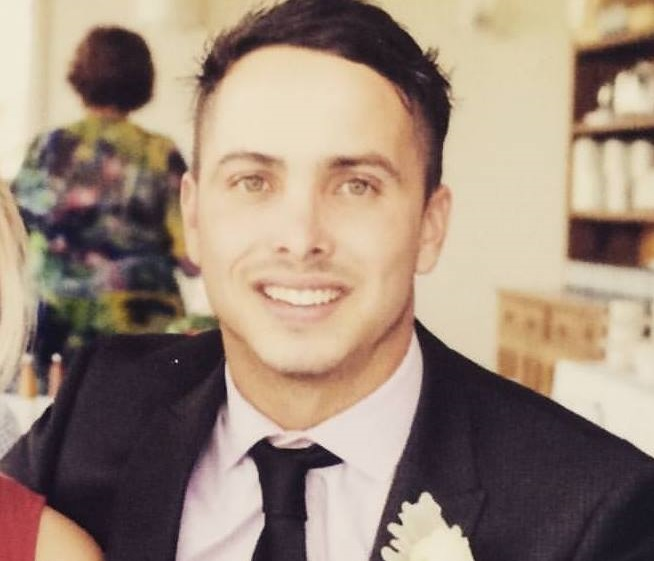
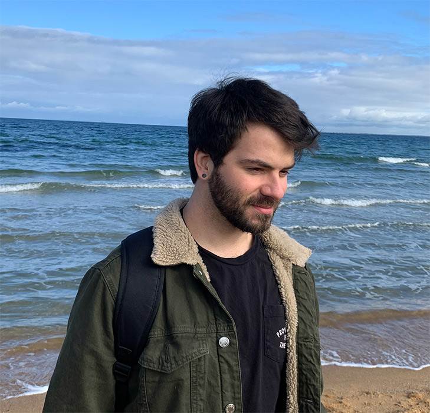

Brent Kimm - s3873880
I am a 30-year-old male from Melbourne, Australia. I
completed VCE in 2008 and have since worked in various
roles within the Railway and Civil industries. When I
was 5 years old, I received a NES for Christmas with the
Super Mario Bros. 1 and 2. From there on, I played a
wide array of games before eventually deciding to build
my own computer many years later. This is where my
interest in the field of Information Technology began...
I am extremely passionate about Football and Basketball,
being a major Saints and Celtics fan respectively
outside of gaming and computers. I also love fishing,
camping, and escaping the hustle and bustle of the city
to explore our beautiful country.
Contact Me
Learn more

Leonard McDonald - s3879586
I am a 28 Male Australian. When I was in primary
school, I had no idea why my brothers friend could play
NES roms on his computer while they wouldn’t work on
our macintosh, from this starting point my interest in
IT and all its workings would manifest. Classmates in
my country side high-school were impressed by the small
scripts i could write, and as I moved forward my
interest developed my skills in problem solving, video
editing, and just enough of everything else to play
around with at beginner level. I’d like to work on game
mechanics, design and video editing in my spare time,
and I believe that the skills I learn from working with
our group ‘Meme Team’ will benefit me both in the
course and my hobbies
Contact Me
Learn more

Lochlann Keenan Kelli - s23872026
My nickname is Lo and I live in Queensland with my
fiancee. I spend alot of my free time gaming, and
chilling out. I used to have a dream of setting up an
American styled 50's diner. But this dream got crushed
when I realised I do not like working in Hospitality. So
I decided to change my dream to something involving my
hobbies; IT. I have been mucking around with computers
ever since I was a very young child, I was always
getting new technology, breaking it, troubleshooting
what I did, and then fixing it all up again.
Contact Me
Learn more

Micheal Heaney - s3875107
Hello there. I'll start with a little about myself I have
a background in warehousing and I’m moving to IT for a
career change, I am half German and half Australian, I
only speak English. My education to date is finishing
year 12 in 2005 I studied IT and Multimedia throughout
my college life but finishing year 12 I pursued a career
in warehousing and driving forklifts. Hobbies I enjoy
are four-wheel driving and off-roading with camping
overnight in the bush near a river. I also play the
guitar and did so in a band for roughly 4 years touring
the East Coast of Australia. Other pass times I enjoy
playing video games with my 3 children.
Contact Me
Learn more

Steven Holman - s3514124
I am 32 years old male currently living in Victoria,
Australia and am working with Meme Team. Computers has
been a passion of mine since I was a child, from growing
up watching my brother build a 486 and playing strategy
games on it such as Civilization and UFO Enemy Unknown.
Programming has since become a passion of mine of which
I wish to expand into a future career. My younger self
use to have many hobbies including playing the guatar,
music and skateboard but I currently spend most of my
current time focusing on computers.
Contact Me
Learn more

Thomas Lewis - s3879008
I am a male Australian, 19-year-old high school graduate
studing at RMIT, I have been gaming as long as I
remember with a keen love for Fighters and FPS, That
developed into a love for computers and furthermore
programing for entertainment, hence i am a member of the
Meme team whom's focus is security & entertainment.
Contact Me
Learn more